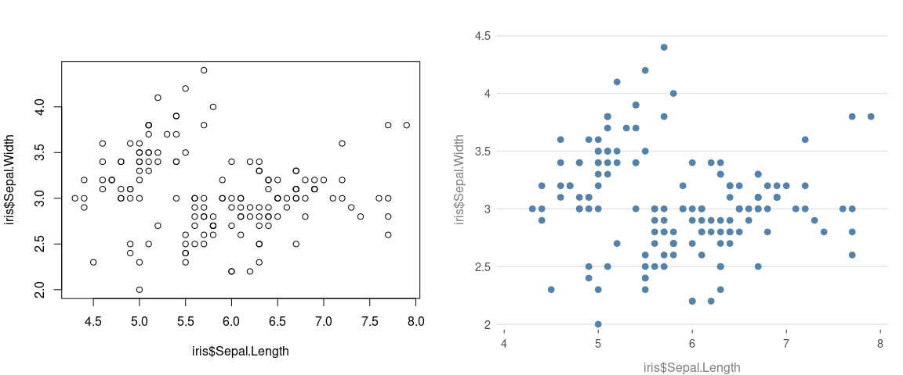
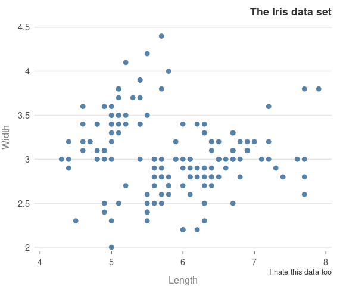

Prettified Base Graphics
Anyone who uses R Base graphics, have a 100 and 1 tweaks that they use to make the figures more presentable. This package aims to capture the tweaks in one place.
Installation
The package is still being developed and the graphs are subject to change. The package is on CRAN and can be installed in the usual way
install.packages("prettyB")To install the dev version, try
devtools::install_github("jumpingrivers/prettyB")The package can then be loaded in the usual way
Usage
All plotting functions work exactly as before, with the same inputs. The difference is that the defaults have been changed. For example, compare
op = par(mfrow = c(1, 2))
plot(iris$Sepal.Length, iris$Sepal.Width)
plot_p(iris$Sepal.Length, iris$Sepal.Width)
#> 
When you first call a prettyB, it changes the underlying par() and palette(). You can reset this via
prettyB::reset_prettyB()The core idea of prettyB is that no new arguments are introducted to the plot functions. This means, that no changes to existing code are required
plot_p(iris$Sepal.Length, iris$Sepal.Width,
xlab = "Length", ylab = "Width",
main = "The Iris data set",
sub = "I hate this data too")
#> 
Package Rationale
This package is not a replacement for ggplot2 or other R related plotting packages. Instead, it has a few simple aims
- provide package authors a low dependency method of making their plots look pretty
- provide academics with a way of generating nice plots, but not worry about future changes in R
- provide a simple way for improving the look and feel of plots in teaching
Since the generated plots by prettyB use standard base graphics, with no new arguments, this makes plots future proof. As a fall-back, just remove the _p.
I picked up the general style a few years ago, but the book Fundamentals of Data Visualization has made it a bit more consist. The author also provided a free online version.
Other information
- If you have any suggestions or find bugs, please use the github issue tracker
- Feel free to submit pull requests
Development of this package was supported by Jumping Rivers